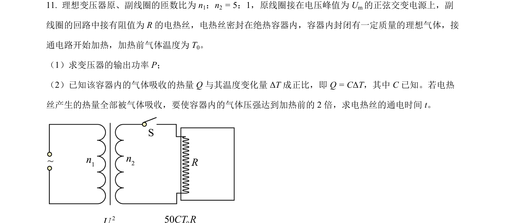
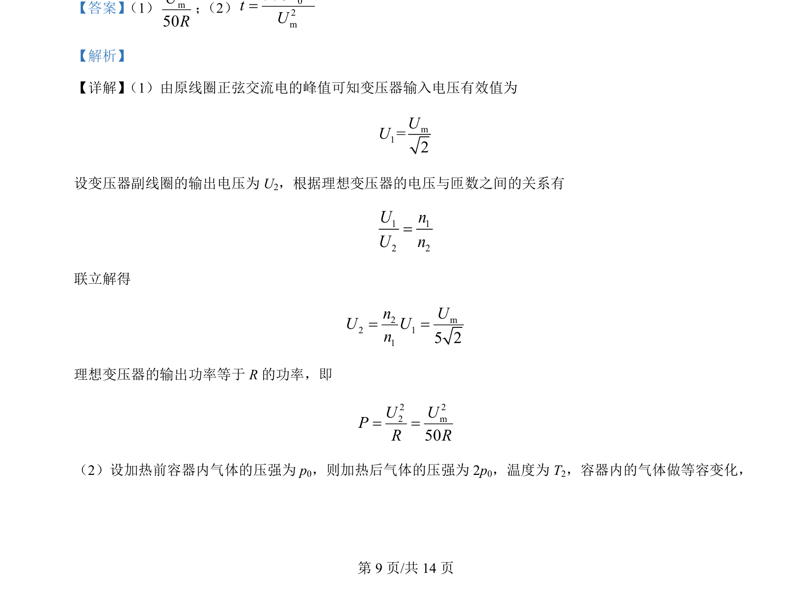
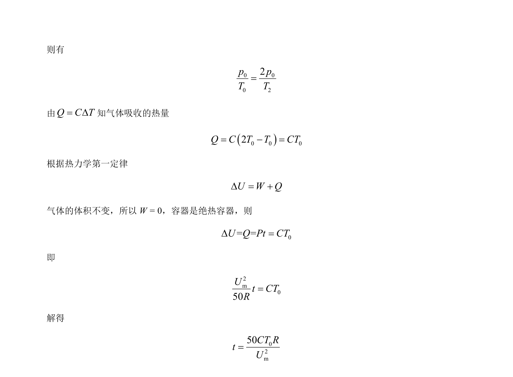

考点：变压器 电磁感应 气体状态方程 热学
变压器
电磁感应
气体状态方程
热学

理想变压器副线圈接电热丝加热绝热容器内理想气体，求变压器输出功率和气体压强达到2倍所需通电时间。


📄 原 PDF 第 9 页：素材/真题/吉林/2008-2024·（吉林）物理高考真题/2024年高考物理试卷（辽宁）（解析卷）.pdf
素材/真题/吉林/2008-2024·（吉林）物理高考真题/2024年高考物理试卷（辽宁）（解析卷）.pdf